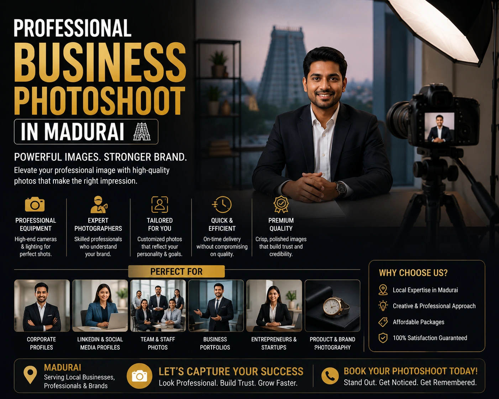
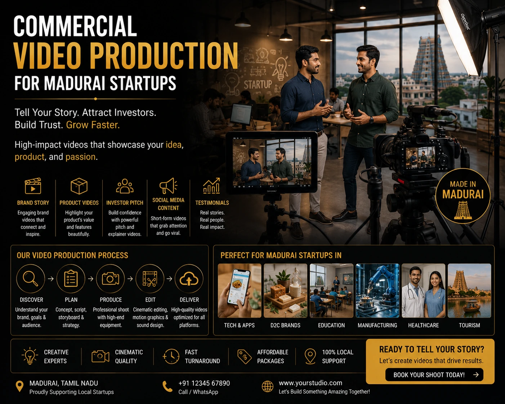

Why Madurai's Growing Brands are Moving from Mobile Photos to Professional Brand Promotion Photography
The Visual Turning Point for Madurai Businesses
There is a specific moment in the growth of every Madurai business when mobile photography stops being good enough. It is not a dramatic moment — it usually arrives quietly, in the form of a dropped inquiry, a social media post that underperforms, a website that fails to convert visitors who clearly have purchasing intent, or a pitch meeting where the brand deck does not communicate the quality of what the business actually delivers.
That moment is the visual turning point — the point at which the gap between the quality of the product or service and the quality of the visual content representing it becomes a commercial liability. And for a growing number of Madurai startups, established retailers, and service businesses, that turning point is arriving sooner than it once did. Because the digital landscape in 2026 — across Instagram, WhatsApp Business, Amazon, and direct-to-consumer websites — has raised the visual standard that a brand must meet before a buyer will take it seriously.
Brand promotion photography in Madurai is the investment that closes this gap. Not just for the images it produces — but for what those images communicate about the brand before a single word of copy is read.
What Mobile Photography Communicates — and What It Cannot
Mobile photography has democratised content creation in ways that have been genuinely positive for small businesses. The ability to publish content daily, to document behind-the-scenes moments, to respond quickly to trends — all of this is valuable and appropriate for certain content types. But there is a category of visual content that mobile photography simply cannot produce: the category of images that communicates brand credibility, product quality, and commercial trustworthiness to a customer who has never interacted with the business before.
When a first-time visitor lands on a Madurai brand's Instagram page or website and sees inconsistently lit, variably composed, smartphone-quality photography — their brain registers three unconscious signals simultaneously: this brand is early-stage, this brand does not invest in quality, and therefore this product or service may not be worth the asking price. None of these signals are stated explicitly. All of them influence the purchase decision.
Professional business photoshoot Madurai produces the opposite signals. Consistent lighting, intentional composition, professional colour grading, and strategic creative direction communicate: this brand is established, this brand invests in excellence, and therefore this product or service is worth the price. The images do not say these things in words. They communicate them in the three seconds before a single word is read.
First Impression Credibility
Professional brand imagery communicates trustworthiness in under three seconds — before price, reviews, or product descriptions are ever read. Mobile photography cannot deliver this signal regardless of the product quality behind it.
Consistent Visual Identity
A professional brand shoot produces a library of images with consistent lighting, colour, and composition across every channel — website, Instagram, WhatsApp Business, advertising — that builds recognition and trust over time.
Price Point Alignment
Visual quality signals the price point a customer should expect. A brand selling premium products with mobile photography creates a cognitive mismatch that makes customers hesitant to pay the actual price.
Algorithm and Platform Performance
Instagram, LinkedIn, and Google Shopping all reward high-quality visual content with stronger organic reach and better ad performance. Professional imagery performs measurably better on every platform metric that matters.

What a Creative Agency in Madurai Delivers That a Freelancer Cannot
The Madurai market for professional photography has grown significantly in recent years — and with that growth has come a wide variation in what is on offer. Understanding the difference between a skilled freelance photographer and a creative agency in Madurai is important for growing brands that need their visual content to serve a commercial purpose, not just look beautiful in isolation.
A freelance photographer delivers technically competent images. A creative agency in Madurai delivers a visual strategy — a coherent creative direction that ensures every image produced serves the brand's specific commercial objectives, is formatted for the brand's specific distribution channels, and is consistent with the brand's visual identity across every touchpoint. The difference is visible in the deliverables: a freelancer produces a folder of images; a creative agency produces a content library.
Specifically, a full-service creative agency in Madurai brings:
- Pre-production creative direction. A brief that defines the brand's visual personality, the target audience's aesthetic preferences, the specific channels the content will be distributed on, and the commercial objectives each image set needs to serve — before a single frame is shot.
- Art direction on the day. A creative director who ensures that styling, composition, lighting, and talent direction are aligned with the brief throughout the shoot — not a photographer who shoots what is in front of them and hopes it matches the brief in post-production.
- Full post-production pipeline. Colour grading, retouching, format optimisation for each specific platform, and delivery as a ready-to-publish content library — not raw files requiring additional processing.
- Commercial video production capability. The ability to produce both photography and video content in the same production session — sharing the same creative direction, lighting setup, and talent — maximising the value of a single production day.
Commercial Video Production Madurai: The Next Step for Growing Brands
For Madurai brands that have already made the transition from mobile photography to professional still imagery, commercial video production Madurai is the natural next investment — and the one with the most significant immediate impact on social media reach, advertising performance, and brand trust.
Video performs differently from still photography across every major digital channel in 2026. Instagram Reels and YouTube Shorts earn significantly more organic reach than static posts. Meta and Google advertising campaigns using video creative consistently outperform image-only campaigns on click-through rate and conversion rate. WhatsApp Business catalogue videos drive higher engagement than static product images. And for Madurai brands whose customers are spread across Tamil Nadu — in Tirunelveli, Coimbatore, Chennai, and beyond — video is the format that communicates brand personality, product quality, and business credibility most effectively to an audience that cannot visit the business in person.
The types of commercial video production Madurai most relevant to growing local brands:
Brand Films
- 60 to 90 second brand story video
- Website hero and social media use
- Communicates brand personality and origin
- Anchors the brand's digital presence for 12 to 18 months
Product Videos
- 30 to 60 second product showcase films
- Amazon listing, Shopify, and social use
- Demonstrates product quality, texture, and function
- Directly improves conversion rate on product pages
Social Media Ad Films
- 15 to 30 second platform-native ad content
- Instagram Reels, YouTube Shorts, Meta Ads
- Built for scroll-stopping performance in the feed
- Formatted in vertical, square, and horizontal for all placements

Best Product Photographers in Madurai: What to Evaluate
For Madurai businesses searching for the best product photographers in Madurai, the evaluation process should go beyond portfolio aesthetics. The commercial effectiveness of product photography depends on technical capability, platform knowledge, and post-production quality — not just compositional style. Here is what to evaluate:
- E-commerce specific portfolio. Ask to see white background product shoots, lifestyle images, and model photography specifically — not just the photographer's most visually impressive personal projects. Commercial product photography is a distinct discipline from fine art or editorial photography.
- Post-production examples. Ask to see before-and-after retouching examples for product categories similar to yours. Colour accuracy, background cleanliness, and consistent crop and canvas size across a collection are the post-production outputs that determine platform compliance and visual consistency.
- Platform compliance knowledge. The best product photographers in Madurai for e-commerce understand the specific image requirements of Amazon, Flipkart, Shopify, and Instagram — and build these requirements into the shoot rather than requiring reformatting after delivery.
- Turnaround time and delivery format. A commercial product photography partner should deliver images within five to seven working days, named and sized for direct platform upload, as a standard part of the service — not as a premium add-on.
- Combined photography and video capability. A partner who can deliver both still product photography and product video in the same production session — at an integrated price — delivers significantly more value than two separate vendors charging separate day rates for the same studio setup.
Affordable Branding Services in Tamil Nadu: Making the Investment Work
The most common hesitation among Madurai startups and growing small businesses considering brand promotion photography in Madurai is budget. Professional visual content feels like a large-brand investment — something reserved for businesses that have already arrived, not for businesses that are building toward that scale.
Affordable branding services in Tamil Nadu reframe this hesitation by approaching the investment differently: not as a cost to be minimised, but as a production output to be maximised within a defined budget. A well-planned professional brand shoot — even a focused, single-day session — produces 30 to 80 high-quality images that serve a growing brand's content needs across its website, social media, advertising, and sales materials for 12 to 18 months. The cost-per-image, distributed across that usage volume and duration, is significantly lower than the perceived cost of a single shoot day.
The framework for maximising the value of a brand shoot investment for a Madurai startup:
- Plan outputs before planning the shoot. Define exactly which images you need — website hero, Instagram grid, WhatsApp Business catalogue, advertising creative, pitch deck — before briefing the production team. Every frame shot should serve a confirmed distribution purpose.
- Shoot for multiple channels in a single session. A single shoot day producing hero portraits, product images, team candids, and one lifestyle setup delivers content across four to five channels without four to five separate productions.
- Combine photography and video in one day. A marketing agency for Madurai startups that offers combined photo and video production in a single session — sharing lighting, location, and crew — delivers a significantly higher content volume per rupee than separate photography and video productions.
- Plan for a 12-month content calendar. Brief the production team on the content calendar for the next 12 months — seasonal campaigns, product launches, festival promotions — and produce variations in a single shoot that support the full year rather than returning for multiple productions.
Marketing Agency for Madurai Startups: The Local Advantage
For Madurai startups evaluating whether to work with a local marketing agency for Madurai startups or a national agency based in Chennai or Mumbai, the local advantage is not just about proximity — it is about contextual intelligence.
A Madurai-based creative agency understands the specific market dynamics of Tamil Nadu — the consumer preferences, the cultural references, the seasonal commercial patterns, and the competitive landscape of the local business community. They understand that a Madurai food brand's visual language should feel different from a Chennai D2C brand's. They know which heritage locations in and around Madurai create the most effective brand imagery context. They have existing relationships with local models, stylists, and locations that reduce production costs without reducing production quality.
And they are available. Not on a video call with a four-day response window — but on-site, in the production session, understanding the specific product, the specific brand, and the specific commercial objective, in the city where the business operates and the customer base lives.
Conclusion
The shift from mobile photography to professional brand promotion photography in Madurai is not a luxury decision for established brands. It is a growth decision for ambitious ones. The visual standard that Madurai's digital marketplace now demands — across Instagram, Amazon, Flipkart, and direct-to-consumer websites — is one that mobile photography cannot meet, regardless of how good the product behind it is.
A professional business photoshoot Madurai, combined with commercial video production Madurai and delivered by the best product photographers in Madurai, is the investment that closes the gap between what a Madurai brand produces and what the national and global online marketplace can see. It is also, for growing brands serious about their next stage of growth, one of the highest-leverage commercial investments available.
At The PhD Ads, we are the creative agency in Madurai built for growing brands — offering brand promotion photography in Madurai, commercial video production Madurai, and affordable branding services in Tamil Nadu for startups, established retailers, and ambitious businesses ready to take their visual identity seriously.
Key Topics
Ready to Make the Move to Professional Brand Photography in Madurai?
At The PhD Ads, we are Madurai's creative agency for growing brands — delivering professional brand promotion photography, commercial video production, and affordable branding services built for Tamil Nadu startups and businesses ready to compete at the next level.
Email: team@e2o.in